2장. 웹 서버 생성 및 아파치웹서버 설치,설정
2-1 PuTTY 설치
우선 PuTTY를 설치 해줍니다.
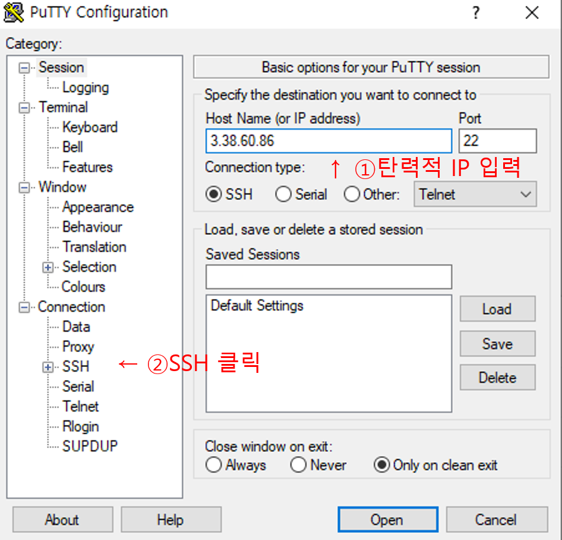
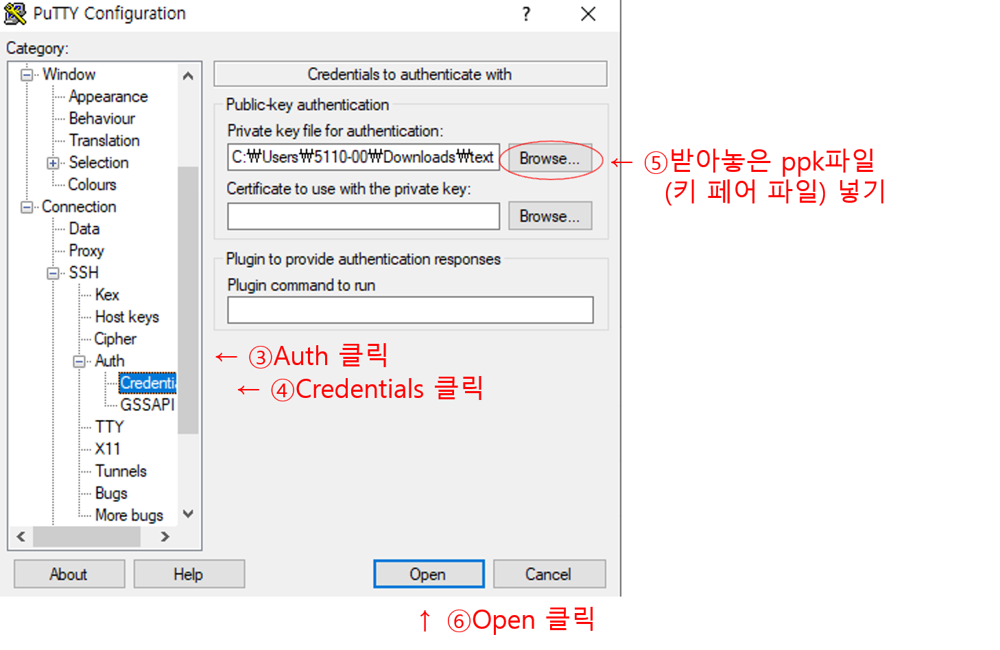
먼저 탄력적 IP를 입력해줍니다.
그 후 Connection -> SSH -> Auth -> Credentials로 들어가서
Private key file for authentication에 받아놓은 ppk파일을(키 페어 파일) 넣어줍니다.
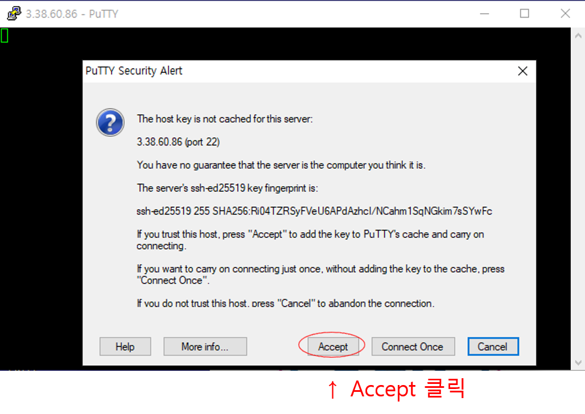
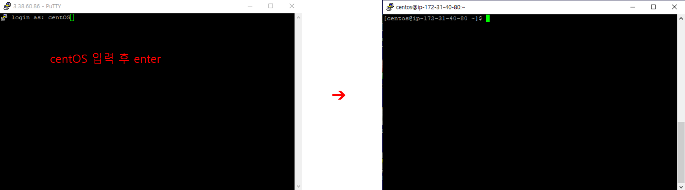
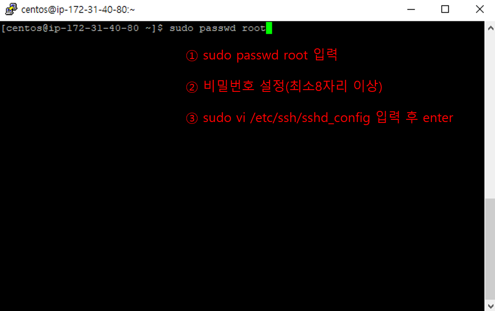
root의 비밀번호를 설정하기 위해서는 관리자 권한이 필요합니다.
하지만 처음 들어오면 centos로 들어오기 때문에 sudo를 이용하여 강제로 관리자 권한으로 들어가야합니다.
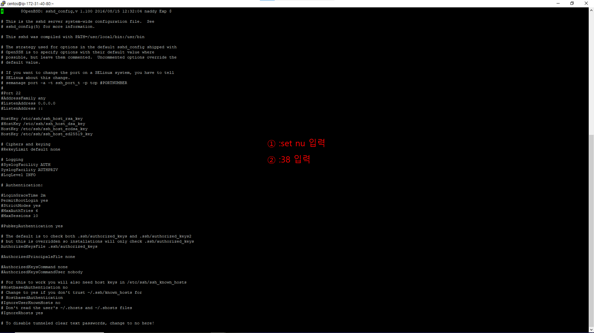
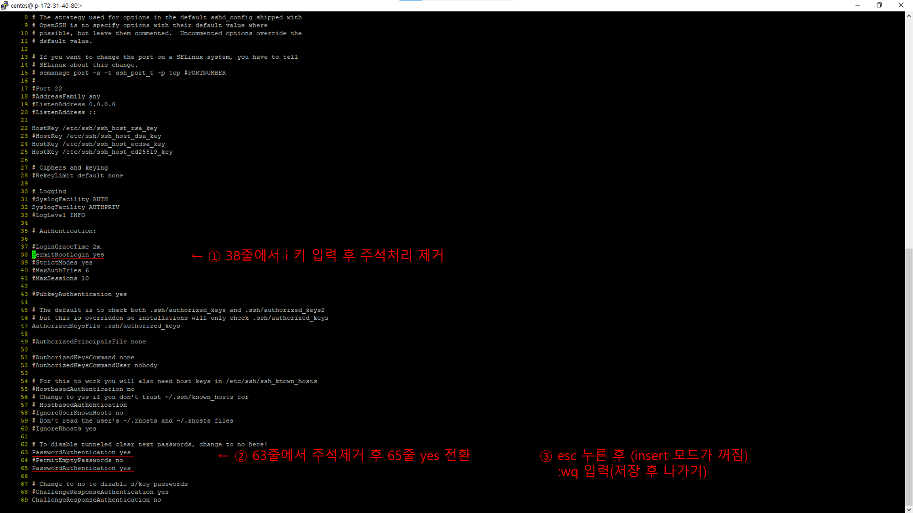
화면에 나온 순서대로 명령어를 입력해줍니다.
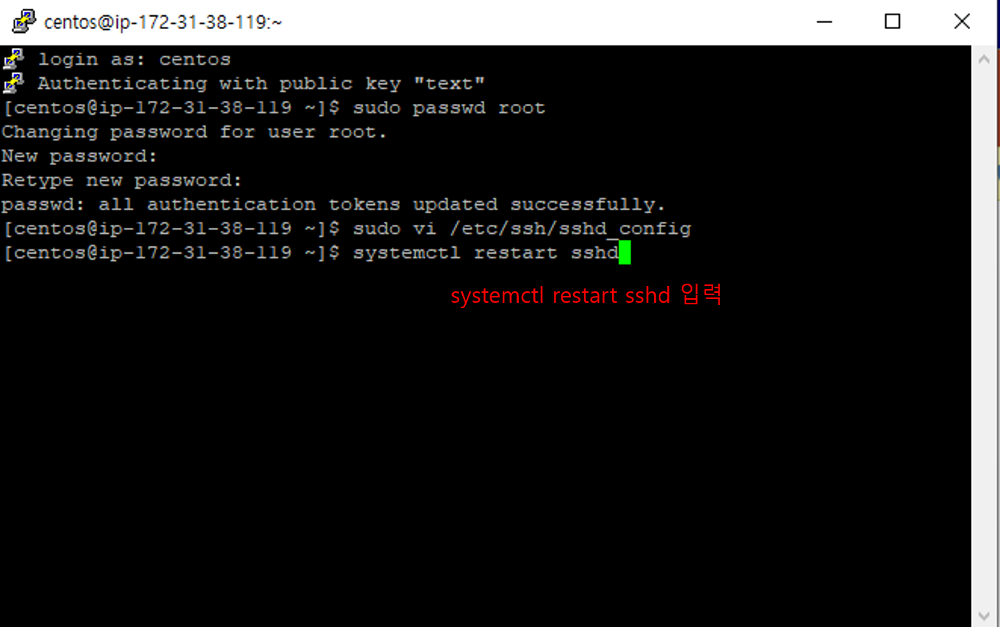
systemctl restart sshd를 입력하여 sshd를 재시작 하여 서버에 적용시킵니다.
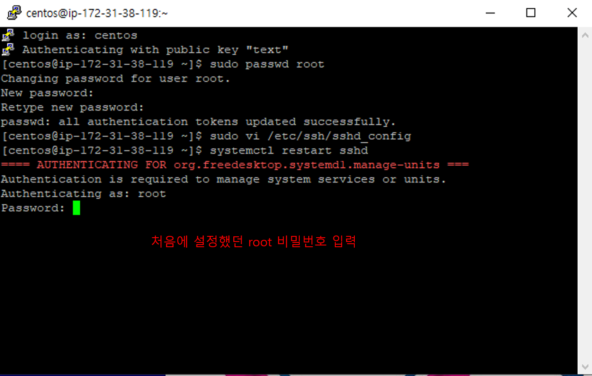
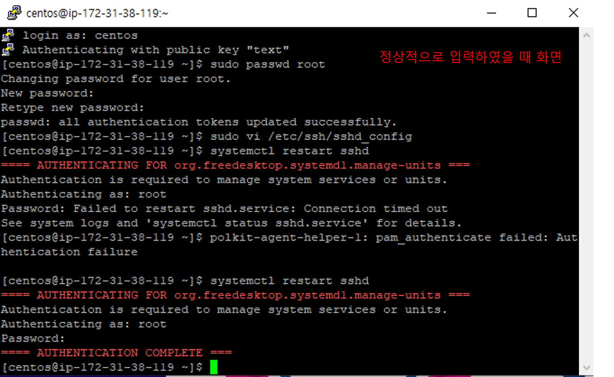
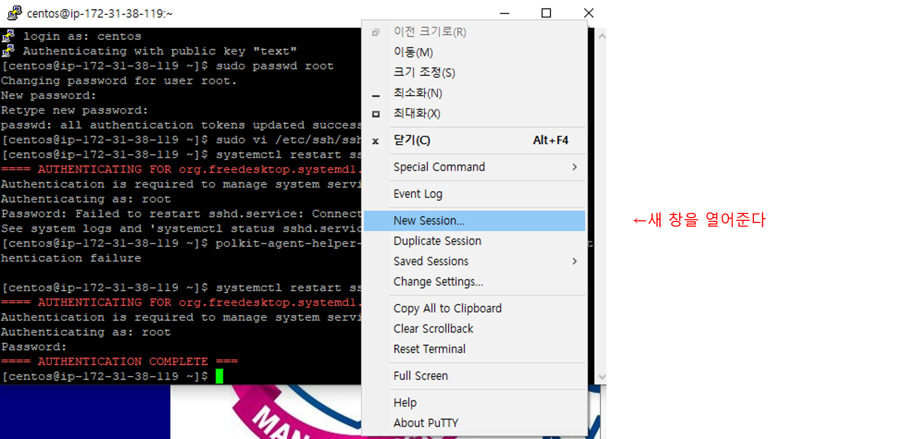
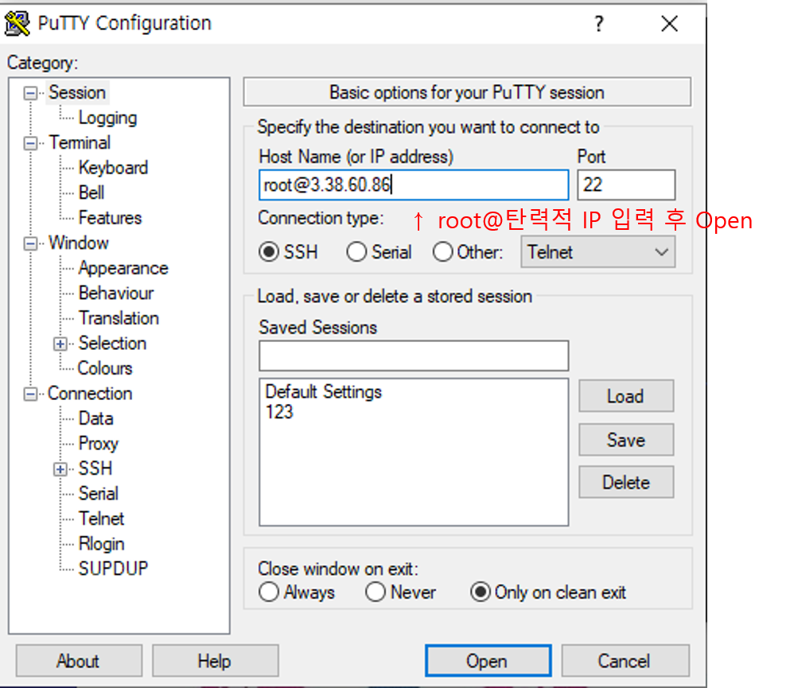
Host Name에 root@자신의 탄력적 IP를 입력한 후 Open을 눌러줍니다.
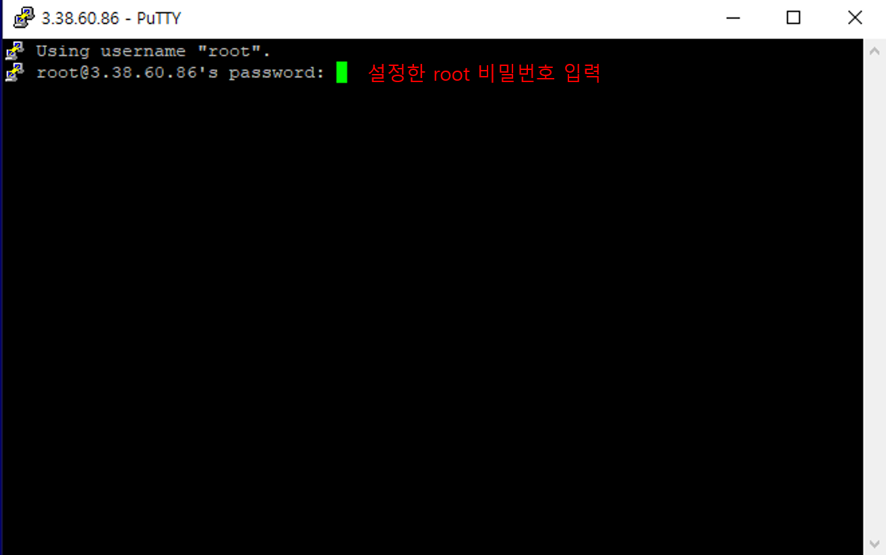
설정한 비밀번호를 입력해줍니다.
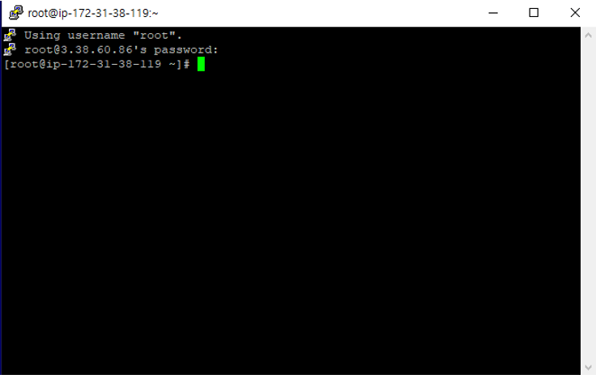
2-2 아파치웹서버 설치 및 설정
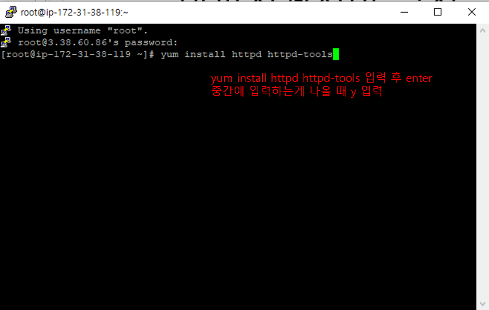
yum install httpd httpd-tools 입력 후 enter 중간에 입력하는게 나올 때 y 입력해줍니다.
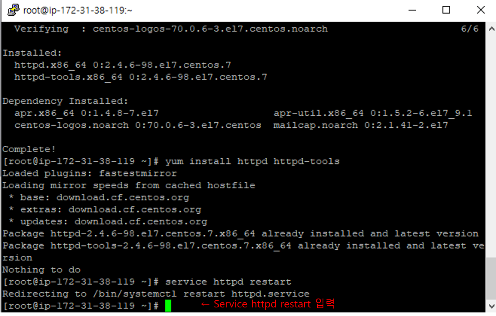
Service httpd restart 입력해줍니다.(아파치를 재시작합니다.)
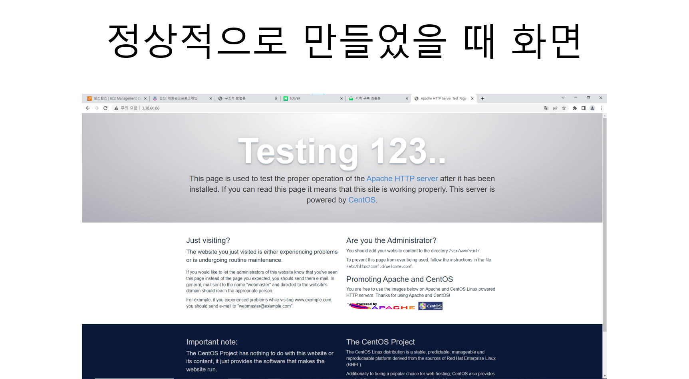
DPTS